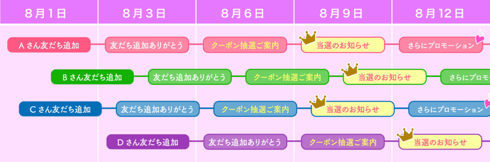

LステップでLINE公式アカウントを10倍活用！
LINE公式アカウントを開設したら（開設方法はこちら）、登録してくれた友だちに向けて配信を始めましょう。
集客数をアップしお店を繁盛させたい方には、Lステップの活用をおすすめしています！ Lステップは、LINE公式アカウントの機能をさらにパワーアップし、情報発信の効果を上げるためのLINEに特化した配信スタンドです。
[― 目次 ―]
- ステップ配信
- タグ付け・セグメント配信
- 顧客管理
- チャットボット自動応答
- リッチメニューがパワーアップ！
- 流入経路分析（上級機能）
1.ステップ配信
友だち追加時のあいさつメッセージだけでなく、サービス購入や集客などに至るよう段階的にメッセージを送ります。

設定さえしてしまえば、あらかじめ準備しておいたメッセージをスケジュールに応じて自動的に配信することが可能です。
2. タグ付け・セグメント配信
友だちに属性に応じたタグを付けることができます。回答フォームやタップした箇所から自動的にタグ付けすることも可能です。
「届けたい相手それぞれにふさわしいメッセージを配信する」ことができ、友だちからブロックされてしまうリスクも回避できます。LINE公式アカウントのように友だち数による規制も無いので、届けたい相手それぞれに配信することができるのです。
3. 顧客管理
友だち追加された時点でLINEネームとアイコンがわかり、登録後のすべての行動履歴が記録されます。友だち数が増えてくると、統計的なデータとして利用することもできます。
Lステップ内の回答フォーム(予約フォーム)を使用することにより、記入された個人情報(本名・住所・電話番号・法人名…等々)が顧客情報に自動的に反映されるので、データ入力の手間や入力ミスがなくなります。
4. チャットボット自動応答
よくある質問への回答やお問い合わせなどについて、自動対応できる機能です。こちらもLINEならではのスピード感を生かした、大変効率の良いツールです。
お客様への個別対応の煩雑さを軽減でき、作業効率がアップします！
LINE公式アカウントだけではできない、チャットモードとbotモードが同時に使えます。
5. リッチメニューがパワーアップ！
カルーセル・チャットボットの機能を組み合わせ階層を深くすることで、ひとつのメニューから発信できる情報量を公式アカウントだけの場合より何倍にもふくらませることができます。
友だちが本当に知りたい情報へ直接いくことも、こちらが伝えたい情報へ誘導することも可能になります。
６. 流入経路分析(上級機能)
友だちがQRコードやホームページ・SNS・チラシなど、どのツールから登録してくれたのか流入経路が分かります。それにより投下すべき予算と媒体が把握でき、経費削減につながります。
いかがでしたでしょうか？
今回解説させていただいた内容は、Lステップの機能全体からいえばまだほんの一部に過ぎません。ビジネスの初心者からベテラン経営者まで、皆さんにご納得いただける強力なツールですので、是非活用いただきたいと思います。
「もう少しLステップについて知りたい」「うちの会社でも導入できるだろうか？」と思われた方は、是非画面LINEに友だち追加ボタンでmatsumotoのお友だちになっていただくか、お問合せ 無料相談ボタンからご相談ください。
まずは、LINE公式アカウントを開設してみましょう！
●LINE公式アカウントの開設方法はこちら
●LINE公式アカウントをオススメする理由はこちら
●LINE公式アカウントでできることはこちら